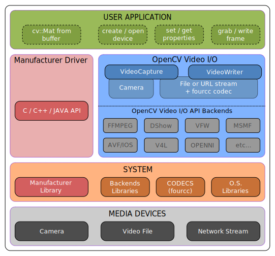

Video I/O with OpenCV Overview
See also:
General Information
The OpenCV Video I/O module is a set of classes and functions to read and write video or images sequence.
Basically, the module provides the cv::VideoCapture and cv::VideoWriter classes as 2-layer interface to many video I/O APIs used as backend.
Some backends such as (DSHOW) Direct Show, Video For Windows (VFW), Microsoft Media Foundation (MSMF), Video 4 Linux (V4L), etc… are interfaces to the video I/O library provided by the operating system.
Some others backends like OpenNI2 for Kinect, Intel Perceptual Computing SDK, GStreamer, XIMEA Camera API, etc… are interfaces to proprietary drivers or to external library.
See the list of supported backends here: cv::VideoCaptureAPIs
Some backends are experimental use them at your own risk
Each backend supports devices properties (cv::VideoCaptureProperties) in a different way or might not support any property at all.
Select the backend at runtime
OpenCV automatically selects and uses first available backend (apiPreference=cv::CAP_ANY).
As advanced usage you can select the backend to use at runtime. Currently this option is available only with VideoCapture.
For example to grab from default camera using Direct Show as backend
//declare a capture object cv::VideoCapture cap(0 + cv::CAP_DSHOW); //or specify the apiPreference with open cap.open(0 + cv::CAP_DSHOW);
If you want to grab from a file using the Direct Show as backend:
//declare a capture object cv::VideoCapture cap(filename, cv::CAP_DSHOW); //or specify the apiPreference with open cap.open(filename, cv::CAP_DSHOW);
Enable backends
Backends are available only if they have been built with your OpenCV binaries.
Check in opencv2/cvconfig.h to know which APIs are currently available (e.g. HAVE_MSMF, HAVE_VFW, HAVE_LIBV4L, etc…).
To enable/disable APIs, you have to:
- re-configure OpenCV using appropriates CMake switches (e.g.
-DWITH_MSMF=ON -DWITH_VFW=ON ...) or checking related switch in cmake-gui - rebuild OpenCV itself
Use 3rd party drivers or cameras
Many industrial cameras or some video I/O devices don’t provide standard driver interfaces for the operating system. Thus you can’t use VideoCapture or VideoWriter with these devices.
To get access to their devices, manufactures provide their own C++ API and library that you have to include and link with your OpenCV application.
Is common case that this libraries read/write images from/to a memory buffer. If it so, it is possible to make a Mat header for memory buffer (user-allocated data) and process it in-place using OpenCV functions. See cv::Mat::Mat() for more details.
The FFmpeg library
OpenCV can use the FFmpeg library (http://ffmpeg.org/) as backend to record, convert and stream audio and video. FFMpeg is a complete, cross-reference solution. If you enable FFmpeg while configuring OpenCV than CMake will download and install the binaries in OPENCV_SOURCE_CODE/3rdparty/ffmpeg/. To use FFMpeg at runtime, you must deploy the FFMepg binaries with your application.
FFmpeg is licensed under the GNU Lesser General Public License (LGPL) version 2.1 or later. See OPENCV_SOURCE_CODE/3rdparty/ffmpeg/readme.txt and http://ffmpeg.org/legal.html for details and licensing information
See also: